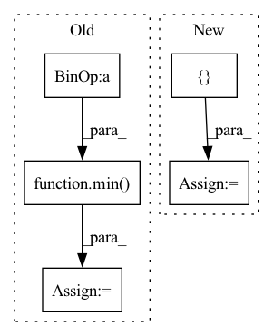

Pattern ID :6806

Before Change
// Scale boxes back to original image shape.
h, w = self.input_shape
iw, ih = shape[1], shape[0]
scale = min(w / iw, h / ih)
nw = int(iw * scale)
nh = int(ih * scale)
dx = (w - nw) / (2*scale)
dy = (h - nh) / (2*scale)
After Change
// boxes坐标格式是左上角xy加矩形宽高wh，xywh都除以图片边长归一化了。
// Scale boxes back to original image shape.
w, h = shape[1], shape[0]
image_dims = [w, h, w, h]
boxes = boxes * image_dims
nboxes, nclasses, nscores = [], [], []
In pattern: SUPERPATTERN
Frequency: 3
Non-data size: 5
Instances
Fragment ID: 23192771
Project Name: miemie2013/keras-yolov4
Commit Name: 66c08ea10b379a6100bf4f71b836a6d7efeaaad7
Time: 2020-05-21
Author: 53960695+miemie2013@users.noreply.github.com
File Name: model/decode_np.py
M Class Name: Decode
N Class Name: Decode
M Method Name: _yolo_out(3)
N Method Name: _yolo_out(3)
M Parent Class: object
N Parent Class: object
M File Name: model/decode_np.py
N File Name: model/decode_np.py
M Start Line: 233
M End Line: 248
N Start Line: 201
N End Line: 209
'>
Before Change
activations = np.empty([self.num_real_images, inception.output_shape[1]], dtype=np.float32)
for idx, images in enumerate(self._iterate_reals(minibatch_size=minibatch_size, mirror_augment=self.mirror_augment)):
begin = idx * minibatch_size
end = min(begin + minibatch_size, self.num_real_images)
images = images[:end-begin]
if num_channels == 1:
images = np.repeat(images, 3, axis=1)
activations[begin:end] = inception.run(images, num_gpus=num_gpus if images.shape[0] % num_gpus == 0 else 1, assume_frozen=True)
After Change
if os.path.isfile(cache_file):
mu_real, sigma_real = misc.load_pkl(cache_file)
else:
activations = []
for idx, images in enumerate(self._iterate_reals(minibatch_size=minibatch_size, mirror_augment=self.mirror_augment, num_samples=self.num_real_images)):
if num_channels == 1:
images = np.repeat(images, 3, axis=1)
activations.append(inception.run(images, num_gpus=num_gpus if images.shape[0] % num_gpus == 0 else 1, assume_frozen=True))
'>
Fragment ID: 23192749
Project Name: mit-han-lab/data-efficient-gans
Commit Name: cd75e64d0d9551add01e90ee212adda4a7524b25
Time: 2020-07-13
Author: shengyu@r6.mit.edu
File Name: DiffAugment-stylegan2/metrics/frechet_inception_distance.py
M Class Name: FID
N Class Name: FID
M Method Name: _evaluate(4)
N Method Name: _evaluate(4)
M Parent Class: metric_base.MetricBase
N Parent Class: metric_base.MetricBase
M File Name: DiffAugment-stylegan2/metrics/frechet_inception_distance.py
N File Name: DiffAugment-stylegan2/metrics/frechet_inception_distance.py
M Start Line: 30
M End Line: 54
N Start Line: 42
N End Line: 47
'>
Before Change
for i in range(batch_size):
j = gt_select_units_num[i]
if j < select_size:
nums = min(units_size - 1, entity_nums[i].item())
nums = torch.tensor(nums, dtype=entity_nums.dtype, device=entity_nums.device)
gt_units[i, j] = L.tensor_one_hot(nums, units_size).long()
After Change
padding = torch.zeros(batch_size, 1, units_size, dtype=gt_units.dtype, device=gt_units.device)
token = torch.tensor(AHP.max_entities - 1, dtype=padding.dtype, device=padding.device)
padding[:, 0] = L.tensor_one_hot(token, units_size).reshape(-1)
gt_units = torch.cat([gt_units, padding], dim=1)
print("gt_units", gt_units) if debug else None
print("gt_units.shape", gt_units.shape) if debug else None
gt_units[torch.arange(batch_size), gt_select_units_num] = L.tensor_one_hot(entity_nums, units_size).long()
'>
Fragment ID: 23192748
Project Name: liuruoze/mini-alphastar
Commit Name: 915eac43e5d4020880519d5c9094dc622a9acdfb
Time: 2021-12-15
Author: liuruoze@163.com
File Name: alphastarmini/core/arch/arch_model.py
M Class Name: ArchModel
N Class Name: ArchModel
M Method Name: sl_forward(9)
N Method Name: sl_forward(9)
M Parent Class: nn.Module
N Parent Class: nn.Module
M File Name: alphastarmini/core/arch/arch_model.py
N File Name: alphastarmini/core/arch/arch_model.py
M Start Line: 188
M End Line: 204
N Start Line: 188
N End Line: 212